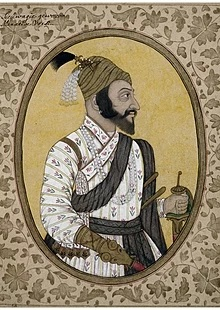

Chhatrapati Shivaji Maharaj
Early life
Shivaji was born in the hill-fort of Shivneri, near the city of Junnar, which is now in Pune district. Scholars disagree on his date of birth. The Government of Maharashtra lists 19 February as a holiday commemorating Shivaji's birth (Shivaji Jayanti).[a][16][17] Shivaji was named after a local deity, the goddess Shivai.[18][19] Shivaji's father Shahaji Bhonsle was a Maratha general who served the Deccan Sultanates.[20] His mother was Jijabai the daughter of Lakhuji Jadhavrao of Sindhkhed, a Mughal-aligned sardar claiming descent from a Yadav royal family of Devagiri.[21][22]
Combat with Afzal Khan
early-20th-century painting by Sawlaram Haldankar of Shivaji fighting the Bijapuri general Afzal Khan
Pratapgad fort
The Bijapur sultanate was displeased at their losses to Shivaji's forces, which their vassal Shahaji disavowed. After a peace treaty with the Mughals, and the general acceptance of the young Ali Adil Shah II as the sultan, the Bijapur government became more stable, and turned its attention towards Shivaji.[37] In 1657 the sultan, or more likely his mother and regent, sent Afzal Khan, a veteran general, to arrest Shivaji. Before engaging him, the Bijapuri forces desecrated the Tulja Bhavani Temple, holy to Shivaji's family, and the Vithoba temple at Pandharpur, a major pilgrimage site for the Hindus.[38][39][40]
Click on image to more info
